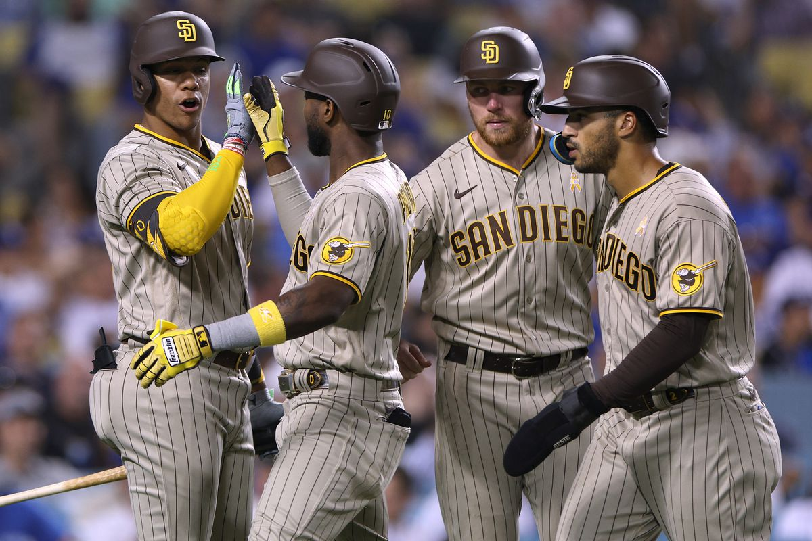

Beisebol
Equipamento
Um uniforme de beisebol é um tipo de uniforme usado por jogadores de beisebol, treinadores e gerentes. A maioria dos uniformes de beisebol tem os nomes e números de uniformes dos jogadores que os usam, geralmente nas costas dos uniformes para distinguir os jogadores uns dos outros. Camisas de beisebol (jerseys), calças, sapatos, meias, bonés e luvas são partes dos uniformes de beisebol. A maioria dos uniformes tem logotipos e cores diferentes para ajudar jogadores, funcionários e espectadores a distinguir as duas equipas uma da outra e dos oficiais.
- Uniforme
Cada equipe da MLB tem seus próprios conjuntos de camisas e uniformes que apresentam um logotipo e diferentes conjuntos de cores, dependendo se são a equipe da casa ou da estrada. Todos os jogadores, treinadores e gerentes usam camisas e calças. As equipes da MLB também têm camisas alternativas destinadas a fornecer uma nova visão ocasional de sua aparência típica, como as camisas do City Connect.
O uniforme de beisebol consiste em calças, uma camisa e o boné de beisebol. Às vezes, as meias também podem fazer parte do uniforme. Geralmente é uma boa ideia usar calças compridas para beisebol para que você não seja raspado ao deslizar para a base.
- Capacete
O capacete é usado pelo batter para proteger a sua cabeça e a orelha, voltada para o pitcher, da bola. Enquanto alguns capacetes têm protetores de ouvido apenas de um lado, pois apenas a orelha voltada para o pitcher deve ser protegida, capacetes com protetores de ouvido em ambos os lados são mais comuns, pois alguns batedores são canhotos e outros destros.
Os catchers usam um capacete com máscara facial semelhante a uma máscara de um guarda-redes de hóquei para proteger a cabeça e o rosto. Às vezes, eles podem usar um capacete separado e uma máscara facial.
- Chapéu
Todos os jogadores usam um chapéu para proteger os olhos do sol. O design do chapéu de beisebol tornou-se tão popular entre o público em geral que também são usados para fazer uma declaração de estilo.
- Cleats
As chuteiras de beisebol são feitas de borracha ou metal, que os jogadores usam para melhor tração.
- Batt
O taco de beisebol é redondo, sólido de madeira ou alumínio oco. Os tacos de madeira são tradicionalmente feitos de cinzas de madeira, embora às vezes Maple e bambu também sejam usados.
- Bola
A bola usada no beisebol é feita com camadas de fio ou corda enroladas numa esfera de cortiça e um casaco de couro é costurado sobre ele.
- Luvas/Mitts
Os jogadores usam luvas de couro para proteger as palmas das mãos. Um "bolso" entre o polegar e o primeiro dedo ajuda o defensor a pegar a bola facilmente. Os batters usam luvas em uma ou ambas as mãos para aderência adicional e para evitar choques quando atingem a bola. Os catchers usam luvas de couro com bolsos de dedo conectados que são muito mais largos e melhor acolchoados do que uma luva de campo normal. Os homens da primeira base usam luvas de couro que são mais longas e mais largas do que uma luva de campo padrão. Eles são semelhantes à luva do catcher, pois os quatro dedos estão conectados; além disso, é além disso, é arredondado e tem mais preenchimento do que uma luva de campo padrão.